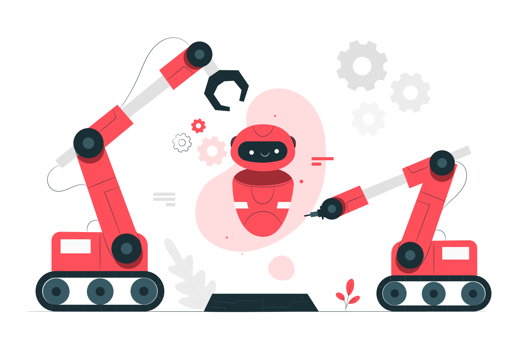

Selamat Datang di Indo AI

Indo AI merupakan situs yang memuat berbagai artikel ringan mengenai Artificial Intelligence (AI) (atau yang dalam Bahasa Indonesia dikenal sebagai “Kecerdasan Buatan”). Situs ini dibangun dengan harapan agar AI dapat dengan mudah dipahami
oleh berbagai kalangan khususnya di Indonesia. Kedepannya Indo AI akan memuat artikel-artikel yang membahas peran AI dalam kehidupan sehari-hari, perkembangan teknologi AI saat ini, serta tutorial dalam bidang AI. Semoga situs ini dapat
membuat AI mudah dikenali dan dipahami di tanah air sekaligus menjadi wadah untuk berbagi ilmu :)
Definisi AI
Ketika mendengar kata Artificial Intelligence (AI) pertama kali, yang sering terlintas dalam benak adalah tokoh-tokoh dalam film seperti Wall-E, Bumblebee dalam Transformers, atau T.A.R.S dalam film Interstellar.Para ahli mendefinisikan
AI (Kecerdasan Buatan) secara beragam dalam literatur. Namun menurut Russel&Norvig secara garis besar definisi AI dapat dikategorikan ke dalam dua dimensi berbeda. Kita dapat melihat bahwa definisi AI dikaitkan dengan proses berpikir dan
penalaran (reasoning). Sedangkan pada baris kedua (baris bawah) definisi AI dalam Table 1 dikaitkan dengan perilaku (behavior). Nah silakan diingat-ingat kembali apakah tokoh-tokoh mesin cerdas di dalam film-film atau karakter pendukung
dalam games favorit Anda memenuhi kriteria di atas untuk layak dikatakan memiliki AI :)). Bagi pembaca yang tertarik untuk memahami AI secara mendalam, silakan membuka-buka buku karangan Russel&Norvig.
Tren AI
Bayangkan Anda ada di masa depan di mana sistem seperti robot sudah mampu berpikir dan bertindak sendiri tanpa pengawasan manusia. Katakan Anda ingin terbang ke Florida untuk mengunjungi sebuah conference. Kemudian Anda harus memilih di antara dua pesawat,
yang satu dikendalikan oleh pilot manusia dan pesawat yang satu lagi dijalankan sepenuhnya oleh mesin yang bekerja secara autonomous (tanpa bantuan dan pengawasan manusia). Pesawat mana yang akan anda pilih? Saat orang terdekat anda sedang
sakit berat yang mengancam nyawanya dan membutuhkan operasi untuk menentukan kelangsungan hidupnya, apakah Anda akan mempercayai keputusan akhir melakukan operasi pada robot atau dokter (manusia)? Saat seorang ibu sedang berhalangan mengasuh
anaknya karena sebab tertentu (seperti bekerja atau sebab lainnya), percayakah Ia untuk menitipkan anaknya pada robot?
Meskipun beberapa penemuan terkini telah memungkinkan mesin berkerja secara semi-autonomous, seperti pesawat yang sudah dikendalikan dengan sistem autopilot, namun sebagian besar kinerja mesin saat ini masih membutuhkan pengawasan langsung
dari manusia. Selain itu, isu mengenai hukum, etika dan moral menjadi salah satu masalah yang tidak bisa diabaikan. Munculnya teknologi mobil cerdas yang mampu mengemudikan kendaraan tanpa bantuan manusia, contohnya, sekilas tampak seperti
mimpi nyata. Tapi bayangkan jika ada seorang anak kecil yang menyeberangi jalan secara tiba-tiba di depan mobil yang berjalan secara autonomous. Apakah mobil itu memilih menabrak anak kecil atau membanting mobil ke sisi jalan raya dengan
mengorbankan penumpang di dalamnya? Dapatkah mereka berpikir mengenai hukum, etika dan moral seperti manusia? Lalu jika mobil cerdas tersebut mengalami kecelakaan dan melakukan kesalahan, siapa yang akan dituntut? Apakah ilmuwan penemunya,
perancang mesin, atau perusahaan yang memproduksi mesin? Tentu ini bukanlah pertanyaan yang mampu dijawab dengan mudah.
Contoh lain dapat kita lihat di bidang militer di mana saat ini terjadi pro dan kontra mengenai apakah senjata autonomous boleh dikembangkan. Bayangkan jika senjata itu benar-benar digunakan di medan perang, dapatkah mesin berpikir dan membedakan penduduk
sipil dan tentara yang benar-benar menjadi targetnya? Dalam salah satu artikel IEEE Spectrum yang diposting pada tanggal 1 Juni 2016 silam, Mark Gubrud, mengemukakan berbagai alasan mengapa dunia harus melarang penggunaan senjata autonomous.
Postingan ini mengingatkan betapa bahaya teknologi autonomous patut menjadi perhatian di berbagai negara, termasuk Indonesia.
Seiring dengan berkembangnya teknologi autonomous, wacana mengenai pentingnya memperhatikan hukum, etika dan moral ke dalam sistem merupakan salah satu topik yang ramai diperbincangkan. Topik ini menjadi sorotan tidak hanya di kalangan ilmuwan komputer
dan mesin, namun juga menjadi topik diskusi para pakar di bidang hukum, militer, psikologi, sosiologi, antropologi, kedokteran dan area lainnya. Dan, sama halnya dengan teknologi smartphones yang kini sudah menjadi bagian dalam kehidupan
kita sehari-hari, bukan tidak mungkin di masa depan teknologi autonomous akan mengambil peranan penting dalam kehidupan masyarakat dunia, termasuk negara kita. Salah satu contohnya adalah teknologi mobil autonomous yang kini sedang dikembangkan.
So, are we ready?